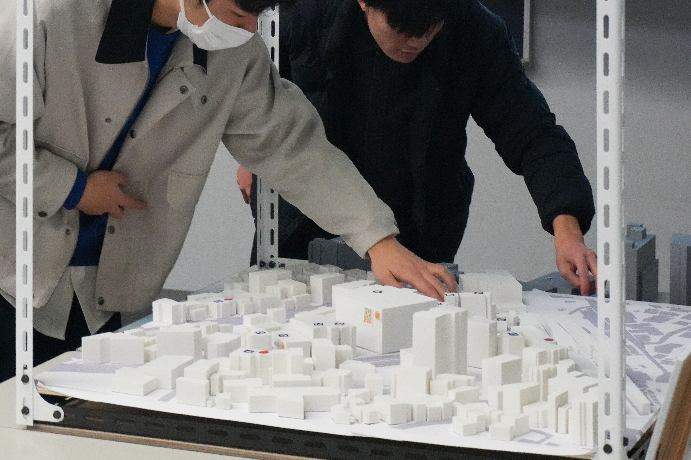
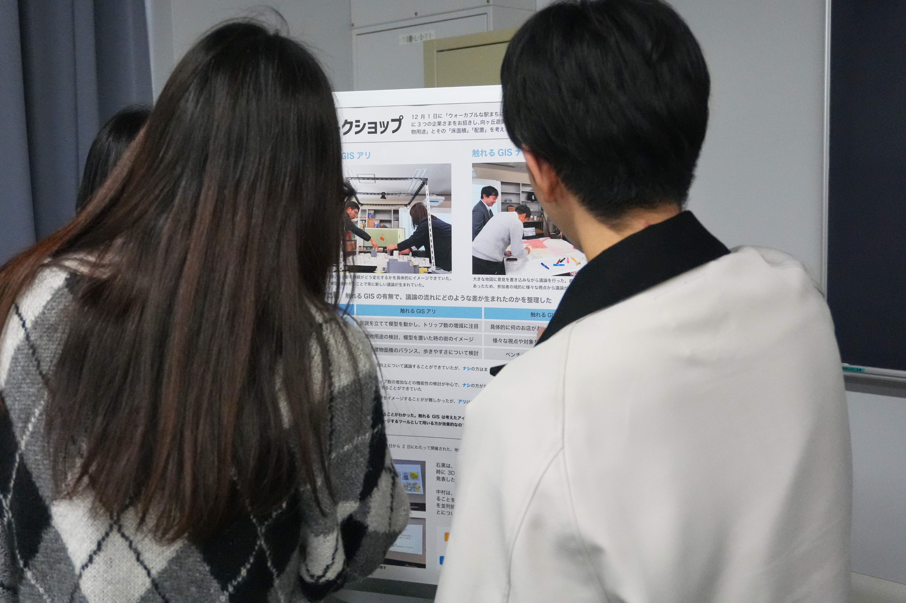
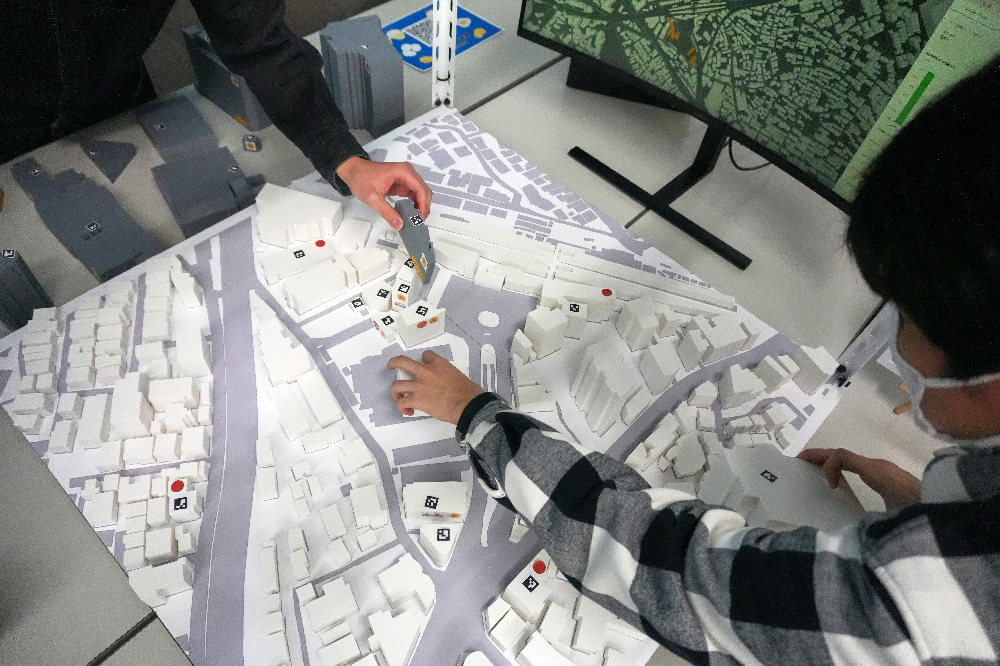

Three.jsとARマーカーを用いた物理模型操作の即時反映を可能にするWebベース触れるGISプラットフォームの開発
石黒希海, 中村暢佑, 中山俊 | 第34回地理情報システム学会学術研究発表大会, 2025

Research Project
触れるGIS — 物理模型×仮想空間の融合
Tangible GIS（触れるGIS）は、物理的な模型とデジタル地理情報システムを融合した 新しい空間情報プラットフォームです。従来のGISはディスプレイ上での操作が主でしたが、 本プロジェクトでは実際に手で触れる物理模型を介して、直感的に空間データを操作・可視化することを可能にします。


本システムは、Three.jsによる3D描画エンジン、ARマーカー認識による位置トラッキング、 RFIDによる複数レイヤの同時取得という3つの技術基盤から構成されています。 物理模型上での操作がリアルタイムでデジタル空間に反映され、 シミュレーション結果が即座にフィードバックされます。
アドソル日進との共同研究で培った物理空間と情報空間の融合技術を発展させたプロジェクトです。 ぜひ他の研究もご覧ください。